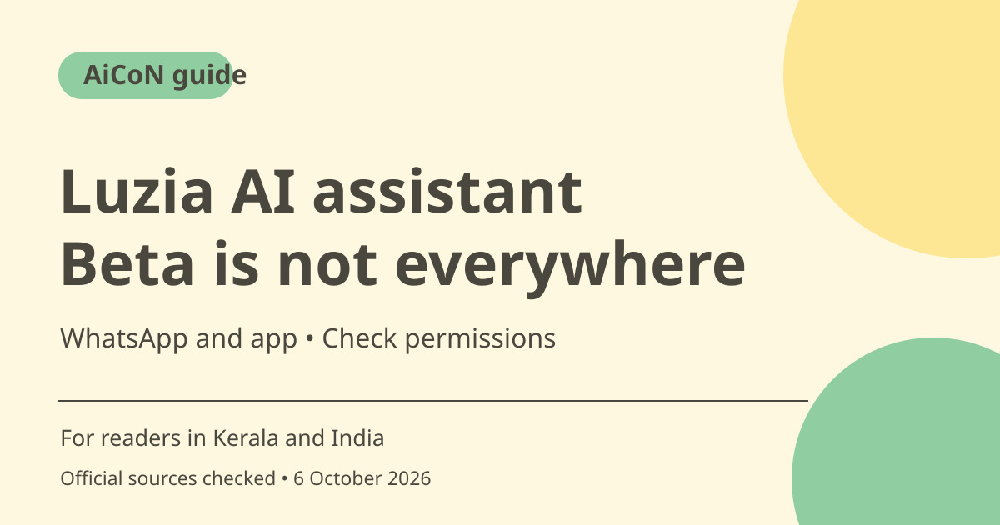

Luzia AI and LuziClaw beta: access, limits and privacy
Luzia advertises a free AI assistant through its app and WhatsApp. Its LuziClaw agent mode is in beta and limited to selected countries. Use the official access route, confirm what your account can actually use and review permissions before sharing private chats or allowing actions.

What is Luzia?
Luzia presents an AI assistant for questions, writing, learning and organisation. Its homepage describes the app as free and promotes WhatsApp access. This is a provider description, not a promise that every feature is available without limits in every country. Internet and mobile-data costs are separate from the assistant's advertised price.
What does LuziClaw add?
The homepage calls LuziClaw an agent mode that can handle requests such as reminders or drafting a complaint. Its examples show approval questions before sending information or a drafted message. Examples are not proof that every action always waits for approval or that a specific integration works on your account.
India access is not established by a global headline
The official page says beta availability is limited to selected countries and will expand. It does not provide a clear India eligibility list in the material read. An app download, old WhatsApp route or beta landing page does not prove you have a LuziClaw seat. If access shows full capacity or is unavailable, do not assume the feature will work later today.
Why permissions matter
The examples refer to information from WhatsApp chats and reminders based on earlier promises. Before enabling such access, understand which chats or account data it can read and what it can send or change. Only connect a service needed for the task. A convenience feature should not silently expose a group's private messages to a new service.
Read the data policy
Luzia's privacy policy describes processing account and service data and using contracted providers. Do not assume that using an assistant inside WhatsApp means all processing stays only in the chat app. Review current terms before uploading confidential work, financial details or other people's private material. Never give an AI chat passwords, OTPs or banking secrets.
How to try it without overcommitting
Start with a harmless factual question or public paragraph. Confirm answers with sources and check the available settings. If agent features appear, use a draft-first task and inspect the recipient and wording before any send. Do not build a time-sensitive workflow around a limited beta until you have tested its actual availability and behaviour.
How to use it, step by step
- Open luzia.com/en and use its current official app or WhatsApp access option. Do not copy a phone number from an unverified post.
- Review the terms, privacy information and account eligibility shown in your region.
- Begin with a non-sensitive question or writing sample and evaluate the response.
- Check whether LuziClaw beta is offered to your account. If it is not available or capacity is full, use ordinary chat or wait for an official change rather than assuming access.
- Inspect any requested connection or chat permissions and allow only what you need and are entitled to share.
- For a reminder or draft, check the time, destination and proposed action. For messages, review final recipient and text together.
- Verify important results independently and remove unnecessary connections when you stop using them. Do not rely on beta reminders for a critical deadline without a fallback.
Cost, eligibility and limits
| Advertised access | The official homepage describes Luzia and LuziClaw as free. This does not establish unlimited usage or all regional availability. |
|---|---|
| Beta availability | Selected countries only in the checked page. No confirmed India eligibility or available seat is promised. |
| Other costs | Your internet/data costs still apply. Review any account-specific paid offer before accepting it. |
| Privacy | Do not share financial secrets or private group content without permission. Agent demonstrations do not guarantee approval for every action. |
Frequently asked questions
Is LuziClaw available to everyone in India?
The checked page only says selected countries. A clear India entitlement was not established.
Do example approval messages guarantee every action is reviewed?
No. They are demonstrations. Check the actual controls and review consequences yourself.
Should I share WhatsApp group chats?
Only if you are permitted to disclose that content and understand the service's requested access.
Official sources
Checked 6 October 2026. Features and prices can change. This is a guide, not a personal product test.